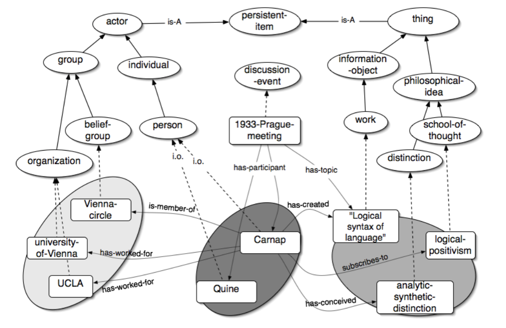
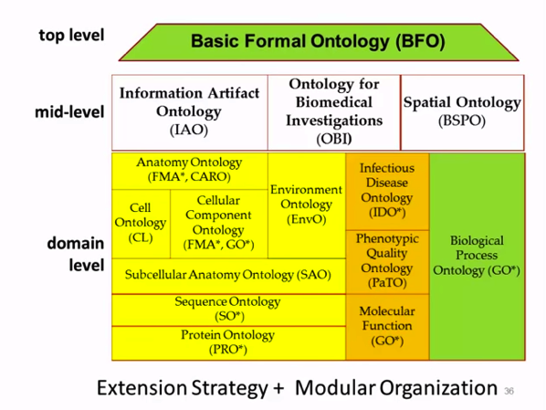
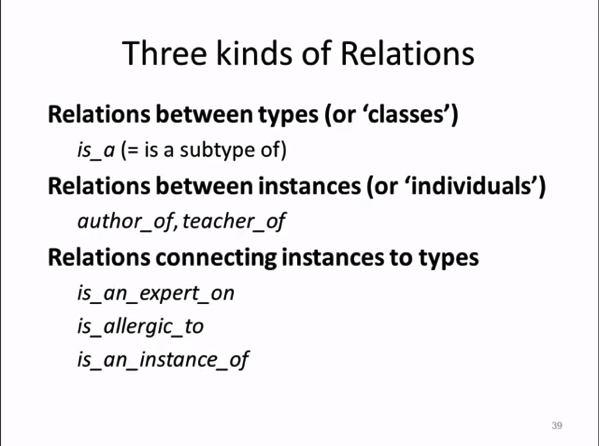
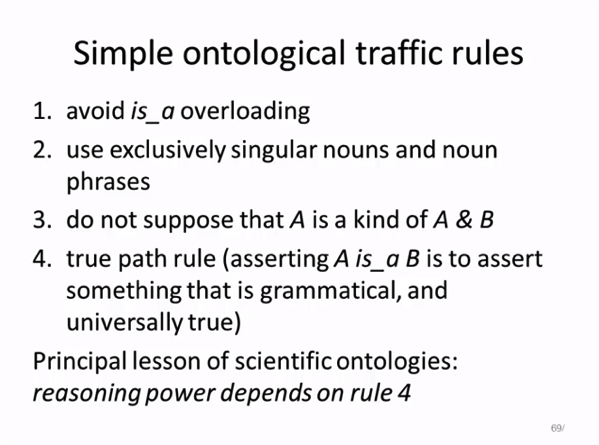
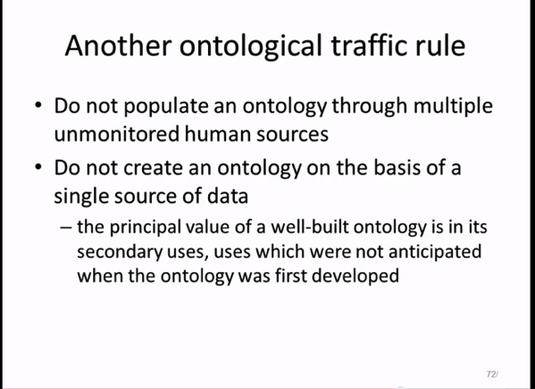
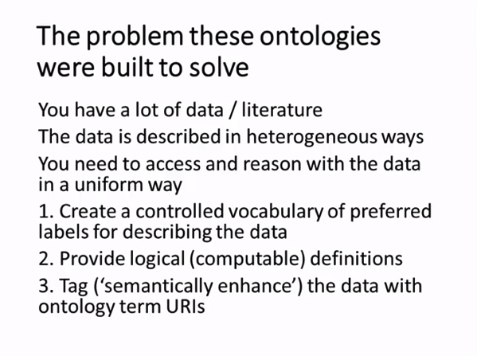
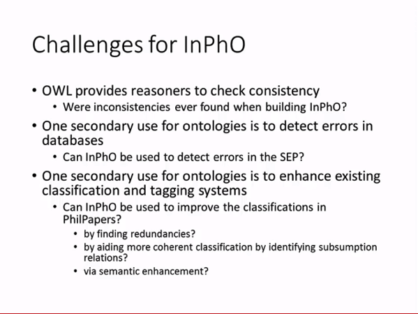

I enjoyed watching a recent presentation by Barry Smith about ontology engineering and in particular its application in the field of philosophy itself. The presentation was hosted by the InPho team at Indian University, whose ongoing work based on creating an ontological backbone for Stanford Encyclopedia of Philosophy has drawn the attention of many.
Barry Smith is a prominent contributor to both theoretical and applied research in ontology. He is the author of many publications on ontology and related topics. In particular, the Basic Formal Ontology is a widely used top level model in the scientific community.
I'm a bit surprised that there was no mention whatsoever of the work I did a while back in the context of the PhiloSURFIcal project. Built as part my PhD, the PhiloSURFIcal software tool allowed to navigate a philosophical text, taking advantage of a map of the concepts relevant to the text. The map, in this case, relied on a rather generic ontology for philosophy, which I instantiated using concepts from Wittgenstein's Tractatus Logico-Philosophicus.
At the time I could not find evidence for any other ontology modelling the philosophical domain, and still to this day I haven't seen any that provides the same level of detail in modeling out the various nuances of philosophical ideas.

Admittedly, the OWL formalization wasn't very good (in fact I originally implemented the ontology using a KR language called OCML). Maybe though I should take this as an incentive to revive this work and publish it again using a more modern Linked Data approach!
A detailed summary of the modeling approach can be found here:
Michele Pasin, Enrico Motta. Ontological Requirements for Annotation and Navigation of Philosophical Resources - Synthese, Volume 182, Number 2, Springer September 2011 .
In any case, here's a few interesting links and slides from Barry Smith's presentation:






Cite this blog post:
Comments:
2014
paper Factoid-based Prosopography and Computer Ontologies: towards an integrated approach
Digital Scholarship in the Humanities, Dec 2014. doi: 10.1093/llc/fqt037
2013
New Technologies in Medieval and Renaissance Studies, (forthcoming). (part of the 'Envisioning REED in the Digital Age' collection)
2012
NeDiMaH workshop on ontology based annotation, held in conjunction with Digital Humanities 2012, Hamburg, Germany, Jul 2012.
2011
Representing Knowledge in the Digital Humanities, Lawrence, Kansas, Sep 2011.
2010
paper Review of Interontology conference 2010
Humana Mente, Journal of Philosophical Studies, 13, May 2010. Issue 13
2009
paper PhiloSURFical: An Ontological Approach To Support Philosophy Learning
Semantic Web Technologies for e-Learning, Oct 2009. D. Dicheva, R. Mizoguchi, J. Greer (Eds.), vol. 4 The Future of Learning, IOS Press
blog Logic and Ontology
2007
paper Capturing Knowledge About Philosophy
Fourth International Conference on Knowledge Capture (K-CAP07), Whistler, BC, Canada, Oct 2007. pp. 47-54
paper AquaLog: An ontology-driven question answering system for organizational semantic intranets
Journal of Web Semantics, Sep 2007. Vol. 5, 2, (72-105), Elsevier
2006
paper An ontology for the description and navigation through philosophical resources
European Conference on Philosophy and Computing (ECAP-06), Trondheim, Norway, Jun 2006.
Poster paper presented at the 3rd European Semantic Web Conference (ESWC-06), Budva, Montenegro, Jun 2006.
2005
paper AquaLog A Ontology-portable Question Answering interface for the Semantic Web
2nd European Semantic Web Conference (ESWC05), Heraklion, Crete, Greece, May 2005. pp. 546-562